13
BOXES
- Controlling size of boxes
- Box model for borders, margin and padding
- Displaying and hiding
At the beginning of this section on CSS, you saw how CSS treats each HTML element as if it lives in its own box.
You can set several properties that affect the appearance of these boxes. In this chapter you will see how to:
- Control the dimensions of your boxes
- Create borders around boxes
- Set margins and padding for boxes
- Show and hide boxes
Once you have learned how to control the appearance of each box, you will see how to position these boxes on your pages in Chapter 15 when we look at page layout.
BOX DIMENSIONS
width, height
By default a box is sized just big enough to hold its contents. To set your own dimensions for a box you can use the height and width properties.
The most popular ways to specify the size of a box are to use pixels, percentages, or ems. Traditionally, pixels have been the most popular method because they allow designers to accurately control their size.
When you use percentages, the size of the box is relative to the size of the browser window or, if the box is encased within another box, it is a percentage of the size of the containing box.
When you use ems, the size of the box is based on the size of text within it. Designers have recently started to use percentages and ems more for measurements as they try to create designs that are flexible across devices which have different-sized screens.
In the example on the right, you can see that a containing <div> element is used which is 300 pixels wide by 300 pixels high. Inside of this is a paragraph that is 75% of the width and height of the containing element. This means that the size of the paragraph is 225 pixels wide by 225 pixels high.

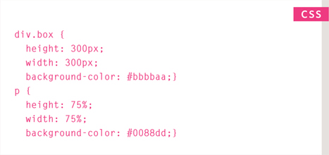
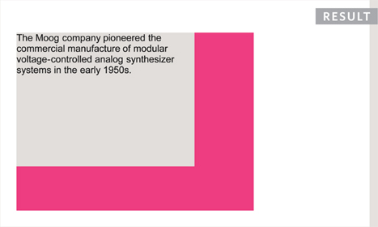
LIMITING WIDTH
min-width, max-width
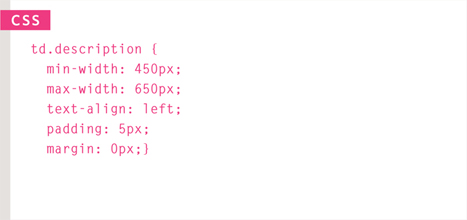
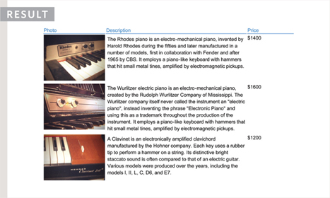
Some page designs expand and shrink to fit the size of the user's screen. In such designs, the min-width property specifies the smallest size a box can be displayed at when the browser window is narrow, and the max-width property indicates the maximum width a box can stretch to when the browser window is wide.
These are very helpful properties to ensure that the content of pages are legible (especially on the smaller screens of handheld devices). For example, you can use the max-width property to ensure that lines of text do not appear too wide within a big browser window and you can use the min-width property to make sure that they do not appear too narrow.
You may find it helpful to try this example out in your browser so that you can see what happens when you increase or decrease the size of the browser window.
Please note that these properties were first supported in IE7 and Firefox 2 so they will not work in older versions of these browsers.
LIMITING HEIGHT
min-height, max-height
In the same way that you might want to limit the width of a box on a page, you may also want to limit the height of it. This is achieved using the min-height and max-height properties.
The example on this page demonstrates these properties in action. It also shows you what happens when the content of the box takes up more space than the size specified for the box.
If the box is not big enough to hold the content, and the content expands outside the box it can look very messy. To control what happens when there is not enough space for the content of a box, you can use the overflow property, which is discussed on the next page.
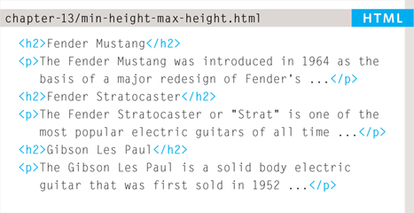
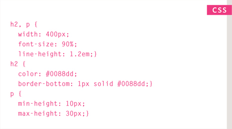
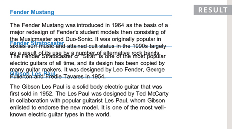
OVERFLOWING CONTENT
overflow
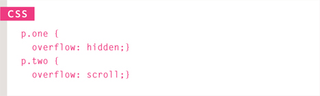
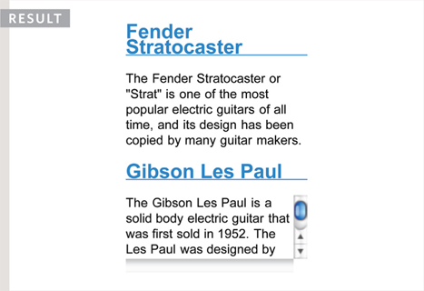
The overflow property tells the browser what to do if the content contained within a box is larger than the box itself. It can have one of two values:
hidden
This property simply hides any extra content that does not fit in the box.
scroll
This property adds a scrollbar to the box so that users can scroll to see the missing content.
On the left, you can see two boxes whose contents expand beyond their set dimensions. The first example has the overflow property with a value of hidden. The second example has the overflow property with a value of scroll.
The overflow property is particularly handy because some browsers allow users to adjust the size of the text to appear as large or as small as they want. If the text is set too large then the page can become an unreadable mess. Hiding the overflow on such boxes helps prevent items overlapping on the page.
BORDER, MARGIN & PADDING
Every box has three available properties that can be adjusted to control its appearance:

BORDER
Every box has a border (even if it is not visible or is specified to be 0 pixels wide). The border separates the edge of one box from another.
MARGIN
Margins sit outside the edge of the border. You can set the width of a margin to create a gap between the borders of two adjacent boxes.
PADDING
Padding is the space between the border of a box and any content contained within it. Adding padding can increase the readability of its contents.
If you specify a width for a box, then the borders, margin, and padding are added to its width and height.
WHITE SPACE & VERTICAL MARGIN
The padding and margin properties are very helpful in adding space between various items on the page.
Designers refer to the space between items on a page as white space. Imagine you had a border around a box. You would not want the text to touch this border or it would become harder to read.
Or, imagine you had two boxes sitting side by side (each with a black border). You would not necessarily want the boxes to touch edges as this would make the line look twice as thick on the facing sides.
If the bottom margin of any box touches the top margin of another, the browser will render it differently than you might expect. It will only show the larger of the two margins. If both margins are the same size, it will only show one.
BORDER WIDTH
border-width
The border-width property is used to control the width of a border. The value of this property can either be given in pixels or using one of the following values:
thin
medium
thick
(You cannot use percentages with this property.)
You can control the individual size of borders using four separate properties:
border-top-width
border-right-width
border-bottom-width
border-left-width
You can also specify different widths for the four border values in one property, like so:
border-width: 2px 1px 1px 2px;
The values here appear in clockwise order: top, right, bottom, left.
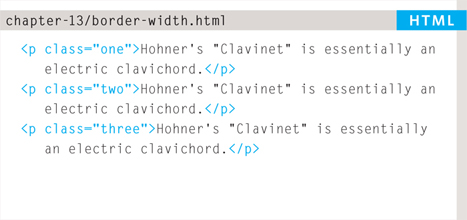
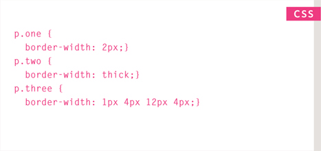
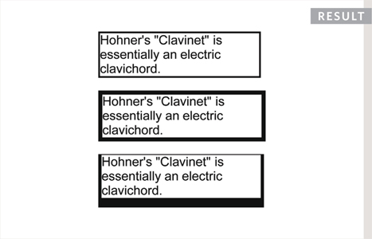
BORDER STYLE
border-style
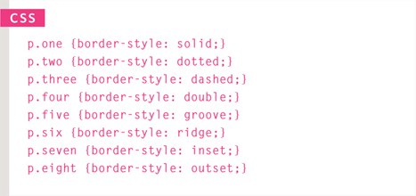
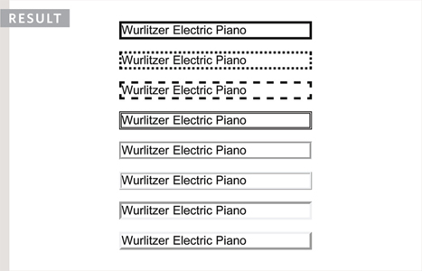
You can control the style of a border using the border-style property. This property can take the following values:
solid a single solid line
dotted a series of square dots (if your border is 2px wide, then the dots are 2px squared with a 2px gap between each dot)
dashed a series of short lines
double two solid lines (the value of the border-width property creates the sum of the two lines)
groove appears to be carved into the page
ridge appears to stick out from the page
inset appears embedded into the page
outset looks like it is coming out of the screen
hidden / none no border is shown
You can individually change the styles of different borders using:
border-top-style
border-left-style
border-right-style
border-bottom-style
BORDER COLOR
border - color
You can specify the color of a border using either RGB values, hex codes or CSS color names (as you saw on pages 251-252).
It is possible to individually control the colors of the borders on different sides of a box using:
border-top-color
border-right-color
border-bottom-color
border-left-color
It is also possible to use a shorthand to control all four border colors in the one property:
border-color: darkcyan deeppink darkcyan deeppink;
The values here appear in clockwise order: top, right, bottom, left.
You could also use HSL values to specify the color as shown on pages 255-256. However, these were only introduced in CSS3 and will not work in older browsers.
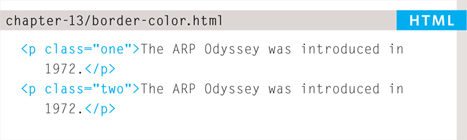
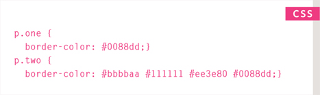
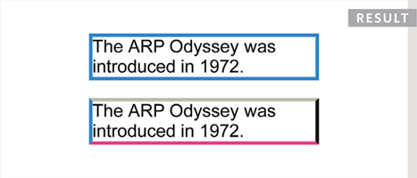
SHORTHAND
border
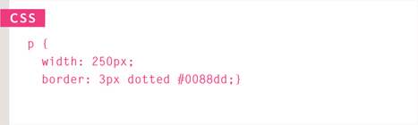
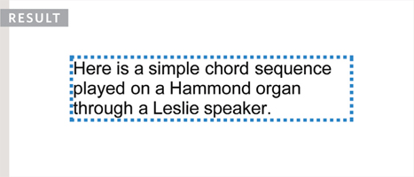
The border property allows you to specify the width, style and color of a border in one property (and the values should be coded in that specific order).
PADDING
padding
The padding property allows you to specify how much space should appear between the content of an element and its border.
The value of this property is most often specified in pixels (although it is also possible to use percentages or ems). If a percentage is used, the padding is a percentage of the browser window (or of the containing box if it is inside another box).
Please note: If a width is specified for a box, padding is added onto the width of the box.
As you can see, the second paragraph here is much easier to read because there is a space between the text and the border of the box. The box is also wider because it has padding.
You can specify different values for each side of a box using:
padding-top
padding-right
padding-bottom
padding-left
Or you can use a shorthand (where the values are in clockwise order: top, right, bottom, left):
padding: 10px 5px 3px 1px;
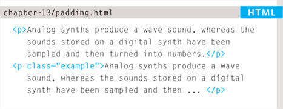
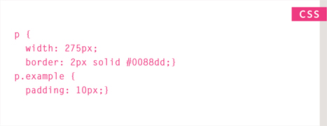
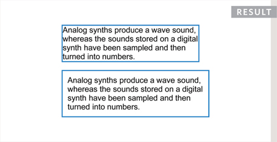
The value of the padding property is not inherited by child elements in the same way that the color value of the font-family property is; so you need to specify the padding for every element that needs to use it.
Up until Internet Explorer 6, the width of the box would include the padding and margins. You can see more about this on page 316.
MARGIN
margin
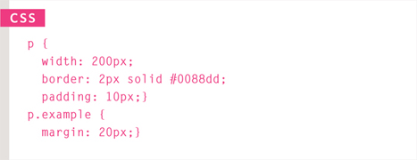

The value of the margin property is not inherited by child elements in the same way that the color value of the font-family property is, so you need to specify the margin for every element that needs to use it.
Up until Internet Explorer 6, the width of the box would include the padding and margins. You can see more about this on page 316.
The margin property controls the gap between boxes. Its value is commonly given in pixels, although you may also use percentages or ems.
If one box sits on top of another, margins are collapsed, which means the larger of the two margins will be used and the smaller will be disregarded.
Please note: If the width of a box is specified then the margin is added to the width of the box.
You can specify values for each side of a box using:
margin-top
margin-right
margin-bottom
margin-left
You can also use the shorthand (where the values are in clockwise order: top, right, bottom, left):
margin: 1px 2px 3px 4px;
Sometimes you might see the following, which means that the left and right margins should be 10 pixels and the top and bottom margins should be 20 pixels: margin: 10px 20px;
(This same shorthand shown above can also be applied to padding.)
CENTERING CONTENT
If you want to center a box on the page (or center it inside the element that it sits in), you can set the left-margin and right-margin to auto.
In order to center a box on the page, you need to set a width for the box (otherwise it will take up the full width of the page).
Once you have specified the width of the box, setting the left and right margins to auto will make the browser put an equal gap on each side of the box. This centers the box on the page (or within the element that the box sits inside).
In order for this to work in older browsers (particularly IE6), the element that the box sits inside should have a text-align property with its value set to center.
The text-align property is inherited by child elements. You therefore also need to specify the text-align property on the centered box if you do not want the text inside it to be centered.
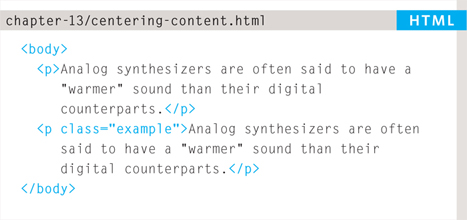
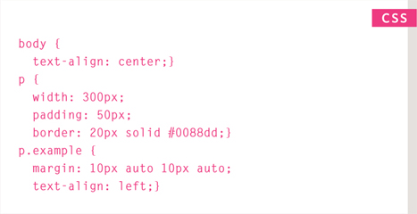
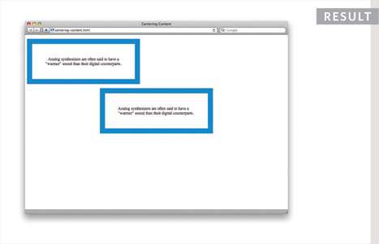
IE6 BOX MODEL
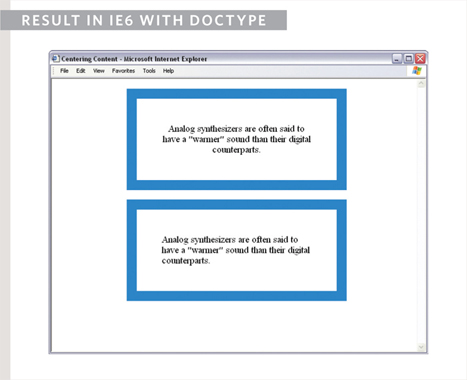
When you specify the width of a box, any padding or margin should be added to the width of it. Internet Explorer 6, however, has a quirk whereby it includes the padding and margins in the width of the box.
The way around this is to ensure that you provide a DOCTYPE declaration for the HTML page. (DOCTYPE declarations were covered on page 181.) You can use either the HTML5, HTML 4 strict, or HTML 4 transitional DOCTYPE declarations to ensure that IE6 follows the correct box model.
To demonstrate this, you can see the example from the left hand page shown in IE6, first without a DOCTYPE declaration and then again with the HTML5 DOCTYPE declaration.
CHANGE INLINE/BLOCK
display
The display property allows you to turn an inline element into a block-level element or vice versa, and can also be used to hide an element from the page.
The values this property can take are:
inline
This causes a block-level element to act like an inline element.
block
This causes an inline element to act like a block-level element.
inline-block
This causes a block-level element to flow like an inline element, while retaining other features of a block-level element.
none
This hides an element from the page. In this case, the element acts as though it is not on the page at all (although a user could still see the content of the box if they used the view source option in their browser).
If you use this property, it is important to note that inline boxes are not supposed to create block-level elements.
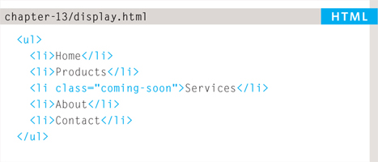
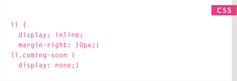
In this example you can see a list. Each item in the list is usually treated as a block-level element, but the rule for the <li> elements indicates that they should be treated as inline elements, which means they will sit alongside each other rather than appearing on new lines.
This technique is often used to create navigation for a site, and in this example a margin has been added to the right of each of the items to separate them out. The rule that applies to the <li> element whose class is coming-soon has been hidden as if it were not in the page at all.
HIDING BOXES
visibility
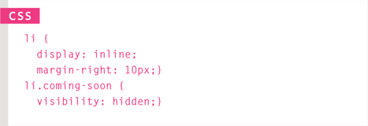
The visibility property allows you to hide boxes from users but It leaves a space where the element would have been.
This property can take two values:
hidden
This hides the element.
visible
This shows the element.
If the visibility of an element is set to hidden, a blank space will appear in its place.
If you do not want a blank space to appear, then you should use the display property with a value of none instead (as covered on the previous page).
Please note that anyone can view the contents of any elements whose visibility property has been set to hidden by viewing the source in their browser.
CSS3: BORDER IMAGES
border-image
The border-image property applies an image to the border of any box. It takes a background image and slices it into nine pieces.
Here is the image. I have added marks where it is sliced in the example, taking 18 pixels from each corner to place an entire circle in each corner. The corner slices are always placed in the four corners of the box, but we have a choice whether the sides are stretched or repeated.
This property requires three pieces of information:
- The URL of the image
- Where to slice the image
- What to do with the straight edges; the possible values are:
- stretch stretches the image
- repeat repeats the image
- round like repeat but if the tiles do not fit exactly, scales the tile image so they will
The box must also have a border width for the image to be shown.
The -moz-border-image and -webkit-border-image properties are not in the CSS specification but help earlier versions of Chrome, Firefox, and Safari display this effect.
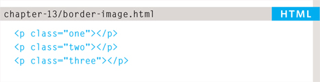
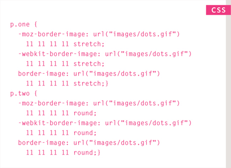
CSS3: BOX SHADOWS
box-shadow
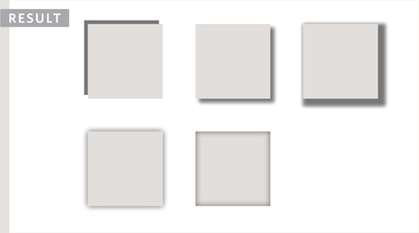
The box-shadow property allows you to add a drop shadow around a box. It works just like the text-shadow property that you met on page 288. It must use at least the first of these two values as well as a color:
HORIZONTAL OFFSET
Negative values position the shadow to the left of the box.
VERTICAL OFFSET
Negative values position the shadow to the top of the box.
BLUR DISTANCE
If omitted, the shadow is a solid line like a border.
SPREAD OF SHADOW
If used, a positive value will cause the shadow to expand in all directions, and a negative value will make it contract.
The inset keyword can also be used before these values to create an inner-shadow.
Chrome, Firefox, and Safari were quick to support this property using the -moz-box-shadow and -webkit-box-shadow properties. These are not in the CSS specification but using them can help this style to work in these browsers.
CSS3: ROUNDED CORNERS
border-radius
CSS3 introduces the ability to create rounded corners on any box, using a property called border-radius. The value indicates the size of the radius in pixels.
Older browsers that do not support this property will show a box with right-angled corners.
The -moz-border-radius and -webkit-border-radius properties are not in the CSS specification. However, they are used in some versions of Chrome, Firefox, and Safari to offer early support for this style (and therefore can be used to achieve this effect in more browsers).
You can specify individual values for each corner of a box using:
border-top-right-radius
border-bottom-right-radius
border-bottom-left-radius
border-top-left-radius
You can also use a shorthand of these four properties (in clockwise order: top, right, bottom, left). For example:
border-radius: 5px, 10px, 5px, 10px;
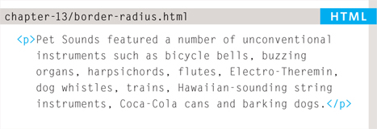
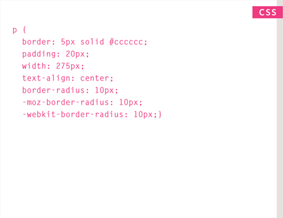
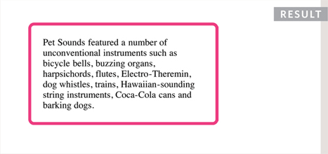
CSS3: ELLIPTICAL SHAPES
border-radius
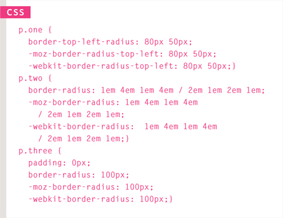
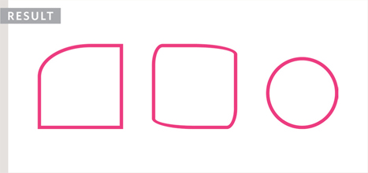
To create more complex shapes, you can specify different distances for the horizontal and the vertical parts of the rounded corners.
For example, this will create a radius that is wider than it is tall:
border-top-left-radius: 80px 50px;
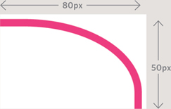
You can target just one corner using the individual properties for that corner:
border-top-left-radius: 80px 50px;
There is also a shorthand for targetting all four corners at once; first you specify the four horizontal values, then the four vertical values, as shown in the second shape on the left.
You can even create a circle by taking a square box and making the border-radius the same height as the square, as shown in the third shape on the left.
EXAMPLE BOXES
In this example, you can see a simple homepage for a music shop.
The whole page sits inside a <div> element with an id of page. This is centered using the margin property, with a value of auto for the left and right margins. The logo and other content are centered using this same technique.
The main <div> has a double-lined border around it, and the size of this box will expand and contract if the browser window is resized. To prevent the page from becoming too narrow or too wide, the min-width and max-width properties are used.
The navigation is created using an unordered list. There are borders set to the top and bottom of this list to make it stand out. The display property has been applied to each of the items in the list so they behave like inline (rather than block-level) elements. This enables the navigation links to sit next to each other horizontally. The padding property has been used to create space between each of the links.
The width property for the <ul> element is set to 570 pixels, and the width property for the <p> elements beneath them is set to 600 pixels. They actually end up the same width as each other because the <ul> element also uses padding to create a gap between the border of the box it creates and the links inside of it, and any padding, borders, or margins are added to the width and height of the box.
If we had not included a DOCTYPE declaration at the start of this page, the sizes of the boxes would be different to each other in Internet Explorer 6 because this browser did not implement the box model in the correct way.
<!DOCTYPE html> <html> <head> <title>Boxes</title> <style type=“text/css”> body { font-size: 80%; font-family: “Courier New“, Courier, monospace; letter-spacing: 0.15em; background-color: #efefef;} #page { max-width: 940px; min-width: 720px; margin: 10px auto 10px auto; padding: 20px; border: 4px double #000; background-color: #ffffff;} #logo { width: 150px; margin: 10px auto 25px auto;} ul { width: 570px; padding: 15px; margin: 0px auto 0px auto; border-top: 2px solid #000; border-bottom: 1px solid #000; text-align: center;} li { display: inline; margin: 0px 3px;} p { text-align: center; width: 600px; margin: 20px auto 20px auto; font-weight: normal;}
a { color: #000000; text-transform: uppercase; text-decoration: none; padding: 6px 18px 5px 18px;} a:hover, a.on { color: #cc3333; background-color: #ffffff;} </style> </head> <body> <div id-“page“> <div id-“logo“> <img src-“images/logo.gif“ alt-“The Analog Specialists“ /> </div> <ul id-“navigation“> <li><a href-“#“ class=“on“>Home</a></li> <li><a href-“#“>For Sale</a></li> <li><a href-“#“>Repairs</a></li> <li><a href-“#“>About</a></li> <li><a href-“#“>Contact</a></li> </ul> <p> <img src-“images/keys.jpg” alt-“Fender Rhodes, Hohner Clavinet, and Wurlitzer EP200” /> </p> <p> We specialise in the sales and repair of classic keyboards, in particular the Fender Rhodes, Wurlitzer EP200, and Hohner Clavinet. </p> </div> </body> </html>
SUMMARY BOXES
- CSS treats each HTML element as if it has its own box.
- You can use CSS to control the dimensions of a box.
- You can also control the borders, margin and padding for each box with CSS.
- It is possible to hide elements using the display and visibility properties.
- Block-level boxes can be made into inline boxes, and inline boxes made into block-level boxes.
- Legibility can be improved by controlling the width of boxes containing text and the leading.
- CSS3 has introduced the ability to create image borders and rounded borders.